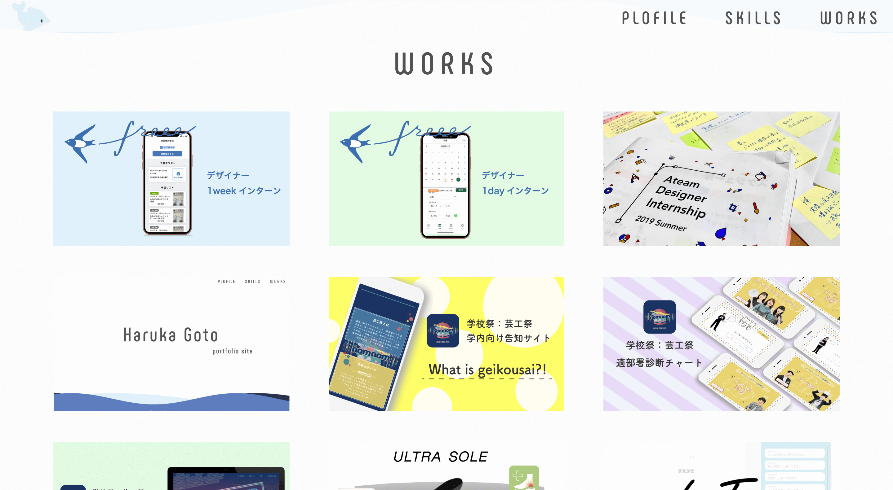
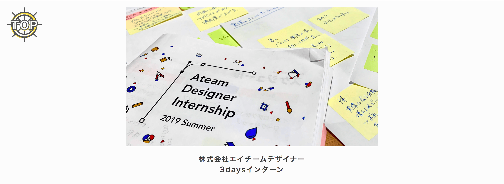

概要
このポートフォリオサイトに込めた思いを詳しく紹介します。
期間
2020年3月1日〜3月13日 (14日間)
テーマ
このポートフォリオサイトのテーマは私の人柄やスキルを十分に伝えるです。
デザインコンセプト
名前である悠伽の「悠」を想像させる「海」をデザインコンセプトとして設定しました。(はるかと読みます)
悠は身も心も清められてゆったりと落ち着いた様子や気の長い様子を表します。
ゆったりと落ち着く様を感じて欲しいと思い、静かで時間を忘れられる存在である海をデザインコンセプトとしました。
また、topページ下方(フッター)の自分の名前はゆっくりと流れる時間の中でも自分を見失わずしっかり確率させているという意味を込めて黒色にしています。

ページ構成
プロフィール→スキル情報→作品紹介という構成になっています。
スキル情報を作品紹介の前に持って来たのは、私はデザインだけでなくコーディングも得意としており、デザインとコーディングの架け橋となるような人材であるということをより知ってもらいたかったからです。
工夫点
追従ヘッダー
ヘッダーはスマートフォンで見る際も追従形式にしました。ハンバーガーメニューで表さなければいけないほどの膨大な情報はなく、ハンバーガーメニューを押す労力をかけることが必要ないと判断したからです。
前後の作品の紹介
作品情報(WORKS)の一番下に他の作品を選んで見ることができるコンテンツがあります。
これはネット記事をの他の記事を見るを参考にしました。
しかし既存のものは他の記事がランダムや関連順に表示されています。
このポートフォリオではランダムや関連順ではなく全ての作品を見てもらいので前後の作品だとわかるように矢印を配置しました。
自力コーディング
波の表現や作品情報の管理はプラグインなどは一切使わず、自力でコーディングしました。
これは最適なプラグインを探す労力、プラグインを使用してカスタムする労力よりも自分でコーディングした方がはるかに早いと思ったからです。
これにより作品情報の管理が格段に楽になりました。具体的には、一度作品タイトル、詳細を入力すればtopページの作品一覧に載る、作品詳細ページでは画像と詳細、前後の作品が載るようになっています。
 